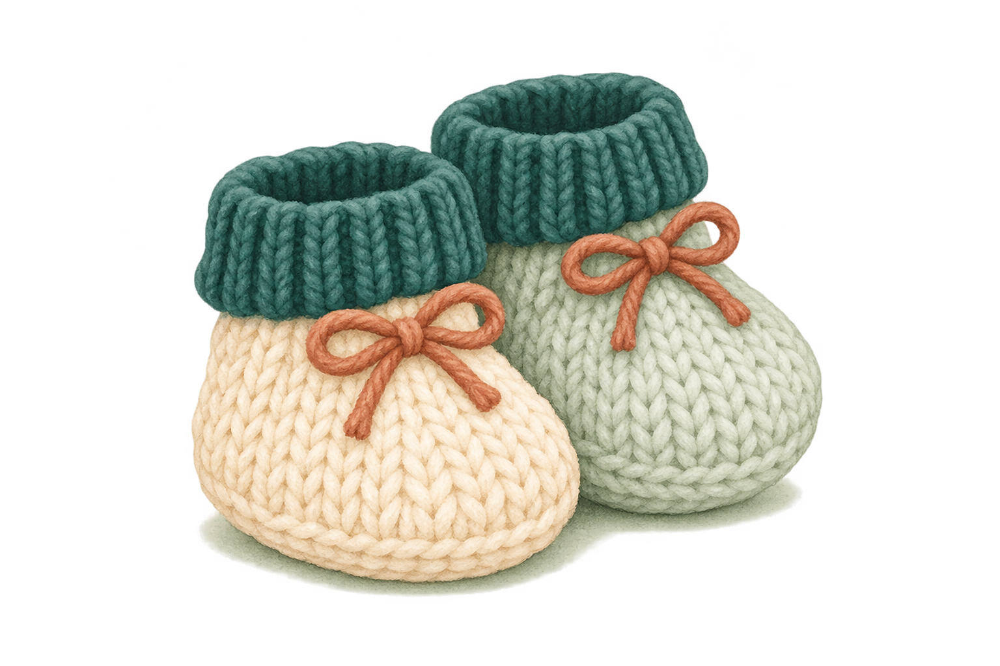

A choose-your-own-adventure learning activity
Your first week home after having a baby.
An interactive guide to recovery and finding support after birth.
Follow a fictional first-time parent through their first week at home after having a baby. Practice recognizing complications, deciding when to seek medical care, and finding social support when getting help is difficult.

Before you begin
Check your understanding
Try these six questions before exploring the activity. You will see the same questions at the end.
Choose one answer unless the question says “Select all that apply.” Each question is worth one point.
Your results
Review the explanations below, then continue to the instructions. You can revisit the quiz at any time.
How to play
-
Explore recovery and warning signs
Before choosing your character, review our Recovery and warning signs guide to learn about common changes after birth, caring for yourself, and when to seek medical help.
-
Meet your character
Choose a parent and learn about their circumstances, strengths, and support.
-
Make a choice
Explore three short situations and choose what your character could do next.
-
Learn as you go
Get feedback on your choices, then check your understanding at the end.
You can revisit your choices and try again. This activity is for learning. There is no timer.
Start the adventure
About this project
This project was created by Aaliah Bint Sadoon, Ashley Moosie, Lily Hagan and Sara Stephenson for NURS 4P16: Relational Care and Leadership: Promoting Change and Health.
This site is an educational prototype with fictional stories.
The information provided is general and may not apply to every person or situation. It does not assess your symptoms or replace advice, diagnosis, or treatment from a qualified healthcare professional. Follow your individual care plan and contact your healthcare team with questions or concerns. If you think you are experiencing a medical emergency, seek emergency care immediately.